Навигация по разделу:
WEB-категория
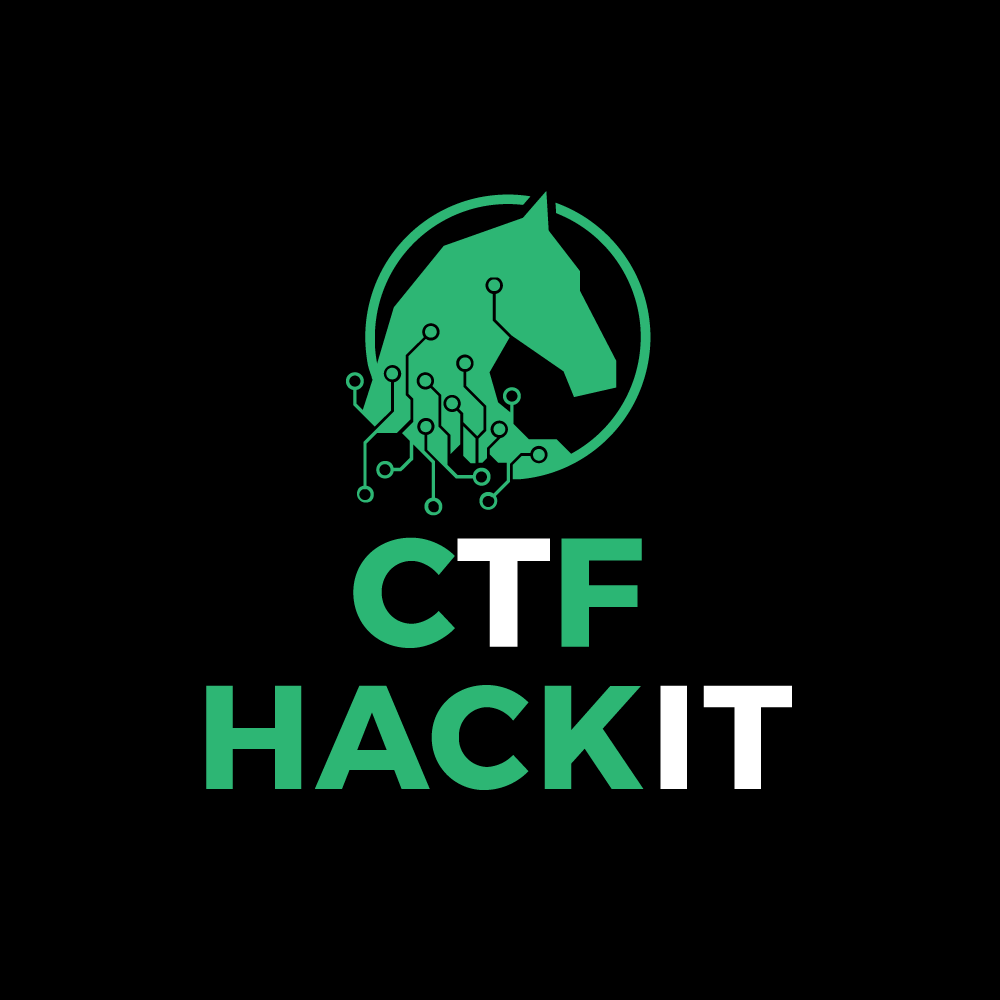 WEB - это категория заданий, связанных с нахождениями уязвимостей на сайтах. Задача заключается в том, чтобы достать из сайта флаг. С этим могут возникать трудности, так как надо много решать заданий на эту тему. Есть задания, где надо найти какую-то недоработку в сайте или в игре и с помощью этого получить флаг. Я плохо разбираюсь в этой теме, но основами я овладел. Цель моего проекта помочь новичку в начале его пути, давая ему советы!
Задание №1.
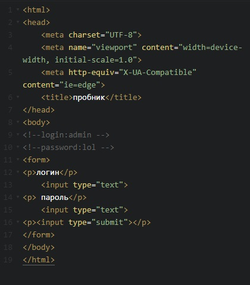 Первая, самая примитивная задача. Дана страничка с формовым запросом, где нужно ввести логин и пароль которые мы не знаем. Эта задача решается очень легко. Важно лишь знать как открыть инструменты разработчика(сочетание клавиш Ctrl+Shift+I, кроме Internet Explorer (f12) ).
После открытия кода, виден логин и пароль, которые надо ввести в поля представленные выше. Вы входите и вам дают флаг. Но за такие задания дают мало баллов!
Задание №2.
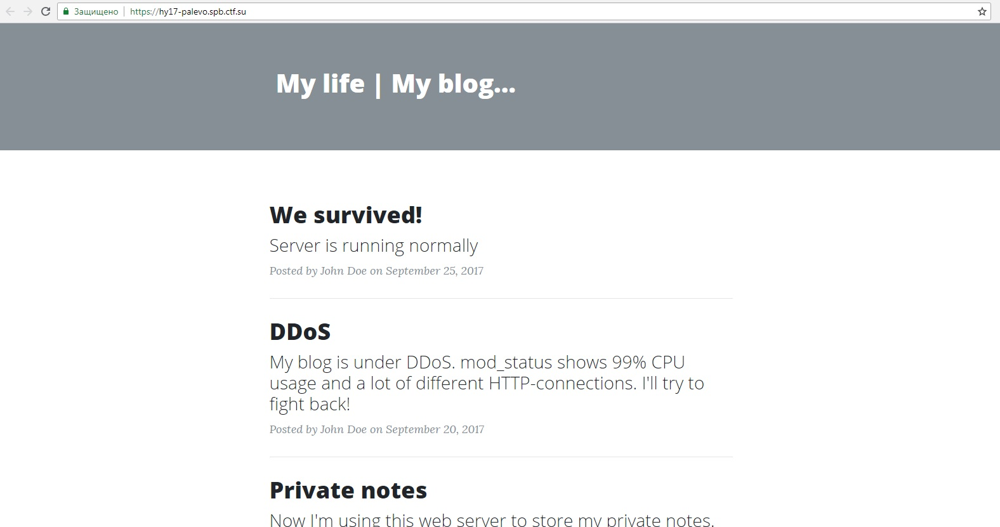
Дан сайт.
Зайдя на него и посмотрев исходный код страницы, мы ничего особенного не находим. Надо запустить DIRB(DIRB - это сканер веб-контента. Он ищет существующие (и / или скрытые) веб-объекты). Обнаруживаем, что на сервере включен mod_status, тк DIRB обнаруживает путь /server-status.
Вводим в адресную строку /server-status.
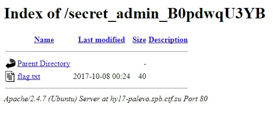
Обнаруживаем секретную страницу с флагом /secret_admin/B0pdwqU3YB.
Перейдя на нее мы найдем флаг!
Задание 3
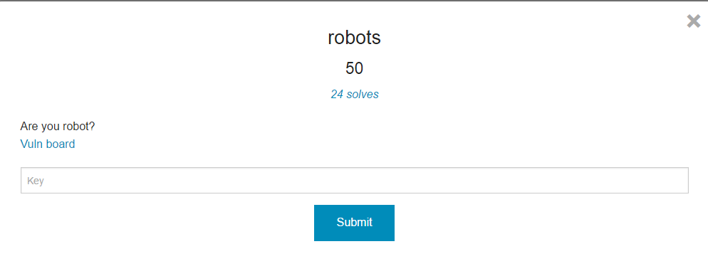Итак, открываем таск и видим:
Обращаем внимание на название и описание к таску - "Are you robot?".
Так, обычно, организаторы пытаются указать нам путь решения, и, я думаю, что после такой подсказки вариантов решение остается немного:)
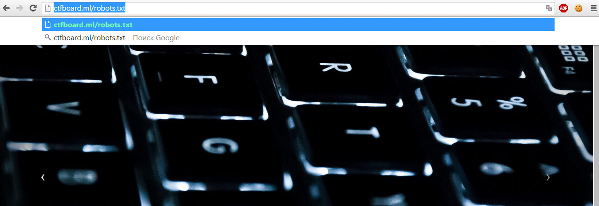Заходим на сайт, который дан в задании и далее пробуем воспользоваться подсказкой из задания. Вводим в адресную строку robots.txt:
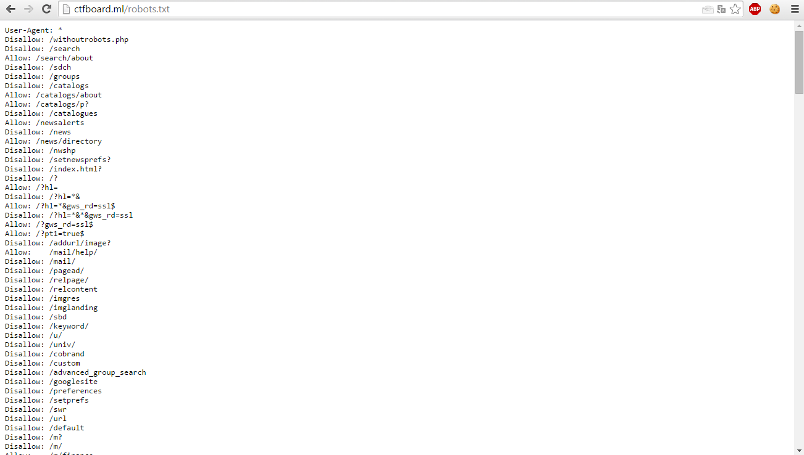Смотрим файл robots.txt.
Видим очень много записей, часть которых просто попытка запутать людей, решающих этот таск. Но не стоит волноваться!
Нужно хорошенько промониторить все записи. Находим файл wihtoutrobots.php, который не должен индексироваться какими-либо поисковыми роботами, т.е. кто-то очень хотел его спрятать, но сделал это не так, как надо было:)
 Переходим к этому файлу и получаем наш флаг! Таск решен.
Переходим к этому файлу и получаем наш флаг! Таск решен.
Задание 4
Итак, рассмотрим такую штуку как Сookie. Иногда в тасках бывают подсказки, к примеру, какие-нибудь картинки с изображением печенек. Знающие английский поймут почему. Например, на StepCTF в одном из web тасков была картинка с Кунг-фу Пандой, которая ела печеньки:)
Запрашивая страницу, браузер отправляет веб-серверу короткий текст с HTTP-запросом.
Например, для доступа к странице http://www.example.org/index.html, браузер отправляет на сервер www.example.org следующий запрос:
GET /index.html HTTP/1.1 Host: www.example.org
браузер→сервер
Сервер отвечает, отправляя запрашиваемую страницу вместе с текстом, содержащим HTTP-ответ. Там может содержаться указание браузеру сохранить куки:
HTTP/1.1 200 OK Content-type: text/html Set-Cookie: name=value
(содержимое страницы)
браузер←сервер
Строка Set-cookie отправляется лишь тогда, когда сервер желает, чтобы браузер сохранил куки. В этом случае, если куки поддерживаются браузером и их приём включён, браузер запоминает строку name=value (имя = значение) и отправляет её обратно серверу с каждым последующим запросом. Например, при запросе следующей страницы http://www.example.org/spec.html браузер пошлёт серверу www.example.org следующий запрос:
GET /spec.html HTTP/1.1 Host: www.example.org Cookie: name=value Accept: /
браузер→сервер
Этот запрос отличается от первого запроса тем, что содержит строку, которую сервер отправил браузеру ранее. Таким образом, сервер узна́ет, что этот запрос связан с предыдущим. Сервер отвечает, отправляя запрашиваемую страницу и, возможно, добавив новые куки. Значение куки может быть изменено сервером путём отправления новых строк Set-Cookie: name=newvalue. После этого браузер заменяет старое куки с тем же name на новую строку. Куки также могут устанавливаться программами на языках типа JavaScript, встроенными в текст страниц, или аналогичными скриптами, работающими в браузере. В JavaScript для этого используется объект document.cookie.
Например, document.cookie = "temperature=20" создаст куки под именем «temperature» и значением 20. Рассмотрим небольшой пример решения таска: При решении таска использовалось расширение Chrome под названием "EditThisCookie". Открыв таск, видим:

Задание 5
Этот протокол описывает взаимодействие между двумя компьютерами (клиентом и сервером), построенное на базе сообщений, называемых запрос (Request) и ответ (Response). Каждое сообщение состоит из трех частей: стартовая строка, заголовки и тело. При этом обязательной является только стартовая строка.
Стартовые строки для запроса и ответа имеют различный формат — нам интересна только стартовая строка запроса, которая выглядит так:
METHOD URI HTTP/VERSION,
где METHOD — это как раз метод HTTP-запроса, URI — идентификатор ресурса, VERSION — версия протокола (на данный момент актуальна версия 1.1).
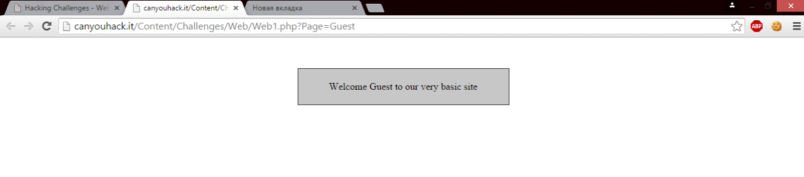Рассмотрим пример решения таска с использованием GET-запроса: Таск называется "Can you GET this one?" из этого уже можно сделать кое-какие выводы:) Итак, открыв таск мы видим:
Немного изучив содержимое таска, можно обратить внимание на URL (Адресную строку, где написано Page = Guest). Если воспользоваться мозгами, то приходит понимание, что стоит воспользоваться волшебный словом "Admin". Отправляем запрос и получаем результат:
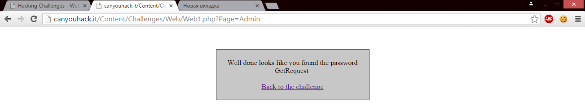
Задание 6
OWASP DirBuster - это приложение от кампании OWASP для перебора наличия файлов на веб сервере по спискам. Расскажу вкратце как с ней работать.
Чем же так хорош DirBuster? А все дело в том, что он проходится именно перебором, а не как Spider по всем ссылкам страниц. То есть мы можем найти те файлы, которые не индексируются.
Один из тасков,который мне встречался, был по вебу: нам дали url сайта. Вычислить на чем работает не получалось (все заголовки, fingerprint'ы были удалены).
Как тут решать нужно было:
1. Запускаем DirBuster на сайт с минимальным словарем (это все таки ctf:)
2. Ждем несколько минут.
3. Замечаем файл .DS_Store, скачиваем его.
4. С помощью hexedit получаем списки файлов в директории (они будут явно видны среди нечитаемых символов.
5. Находим файл типа flagflag.txt
Задание 7
Рассмотрим еще одну простейшую задачу.
Задание называется Флаг.
Дана ссылка, перейдя на которую мы увидим картинку:
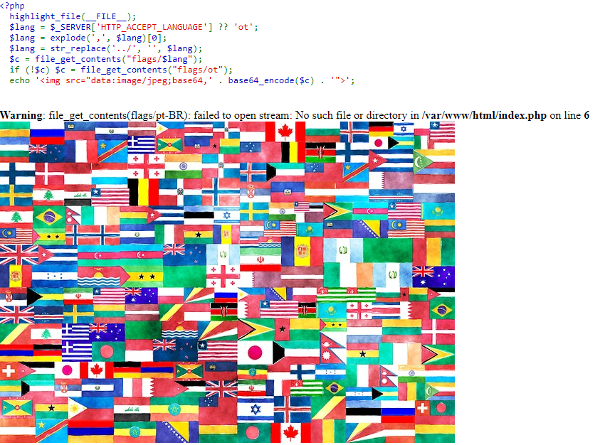Он показывает код php сервера, предупреждение и изображение флагов.
Можно заметить, что он берет файл Accept-Language из заголовка http и использует его для открытия файла в директории flags/. Так что это кажется простым, просто вернитесь назад /и получите флаг. Единственный недостаток - функция str_replace удаляет ../из строки. Чтобы обойти это, мы используем строку, ....//которая при передаче на функцию замены перезапускается../
После этого я создал скрипт, который изменил поле Accept-Language заголовка http-запроса, ....//....//....//....//flagа затем получил файл base64 и расшифровал его.
В конце концов флаг выдается 35c3_this_flag_is_the_be5t_fl4g
Задание 8
В задании указаны следующие данные:
1.ssh -p 11022 protssh@109.233.56.90
2.Password: ctb10
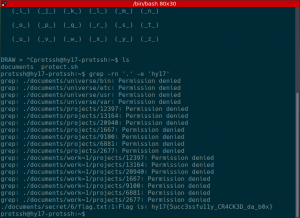После успешной авторизации по SSH, получаем следующую картину.
Можно было бы попробовать подобрать пароль, однако простое нажатие комбинации Ctrl+C позволяет попасть в систему без ввода пароля, флаг наш.
Задание 9
Дана следующая ссылка:
https://hackyou.ctf.su/files/web100_waitwaitwait/index.html. Беглый просмотр JavaScript-кода... а впрочем воспользуемся встроенным в любой веб-браузер отладчиком.
Видим фрагмент кода:
if (data != object.substr(14)) {alert("Not a flag");}else{alert("The flag");} }
После видим флаг!
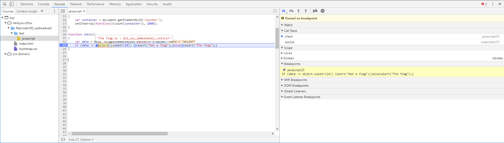Задание 10
Теперь нам дана такая ссылка: https://hy17-wrongsec.spb.ctf.su/.
Сайт практически пустой, попытка подставить кавычку оканчивается полным фиаско, а сканер директорий грустно молчит. Подсказкой является изображение снизу с текстом Acusensor. На помощь приходит следующая статья: https://dustri.org/b/playing-with-the-acusensor.html. Откуда взять пароль? Всё просто, обратимся по одному из следующих путей:
/acu_phpaspect.php~
/acu_phpaspect.php.bak
Получив пароль и ознакомившись с вышеприведенной статьей, совершаем следующий запрос с помощью curl:
curl 'https://hy17-wrongsec.spb.ctf.su/index.php' -H 'Acunetix-Aspect: enabled' -H 'Acunetix-Aspect-Password: 2879091705eecb17d7cac5dac535e722'
Декодируем фрагмент содержимого из Base64.
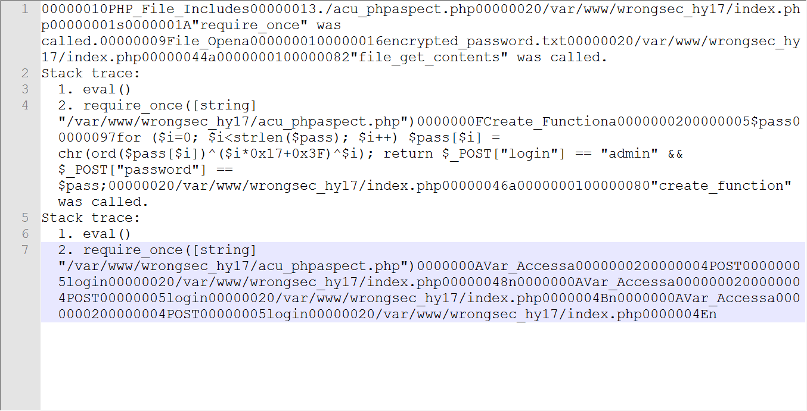Это нам дает путь к файлу с флагом (https://hy17-wrongsec.spb.ctf.su/encrypted_password.txt) и способ его декодирования:
1.?php
2.$pass = file_get_contents('encrypted_password.txt');
3.for ($i=0; $i < strlen($pass); $i++)
4.$pass[$i] = chr(ord($pass[$i])^($i*0x17+0x3F)^$i);
5.echo $pass;
Что и позволяет получить флаг.